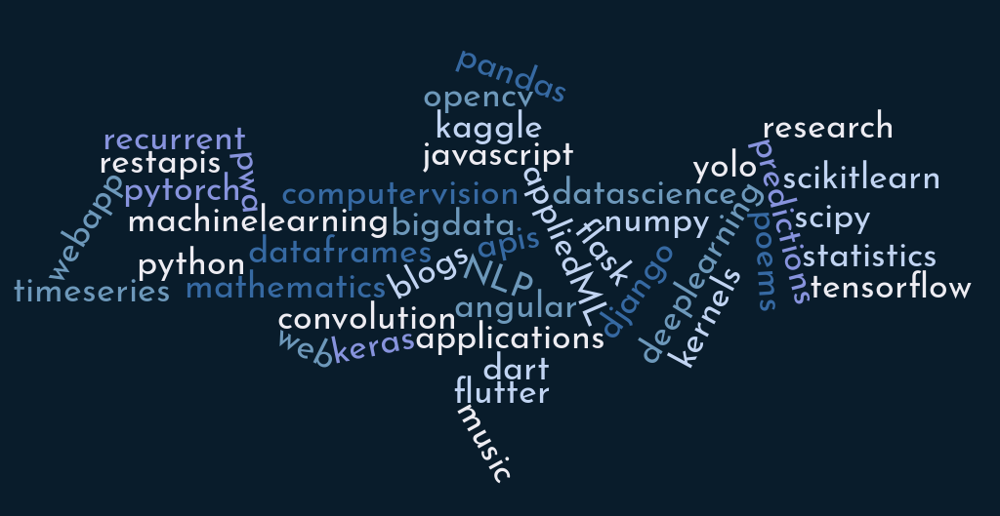

Jack of all trades
Aspire to be a master of few
I love learning different technologies and make applications with or without purpose. I've some mini learning projects in my bag. I love building stuff with something I've no idea about, and learn on the way. Apart from these, I write blogs sometimes.
